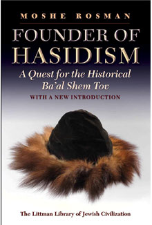

Founder of Hasidism
A Quest for the Historical Ba'al Shem Tov
Second Edition, with a new Introduction
Moshe Rosman supplies the history that proves that the Ba'al Shem Tov, the legendary founder of hasidism, actually existed. He presents the best, most convincing description that can be drawn from the existing documentary evidence, changing our understanding of the Besht and altering the master narrative of hasidism. A substantial new Introduction considers what has changed in the study of hasidism since the influential first edition was published.
More info
'The subject is crucial, the approach is bold and brilliantly chosen. The result is a persuasive revision of a fundamental chapter in the Jewish experience.'
Gershon Hundert, McGill University
'Radical . . . The challenge for the historian is to separate the historical wheat from the legendary chaff. Mr Rosman threshes the sources carefully and with perhaps greater critical caution than any of his predecessors. What emerges is a very different Ba'al Shem Tov than the one portrayed variously by generations of hasidic writers and their opponents, as well as secular polemicists and academic scholars.'
David Biale, Forward
Winner of the 1996 National Jewish Book Award for Jewish History and the 2000 Zalman Shazar Prize for Outstanding Achievement in Jewish Historical Research
The Ba'al Shem Tov is an elusive subject for historians because documentary evidence about his life is scanty and equivocal. Until now, much of what was known about him was based on stories compiled more than a generation after his death, many of which serve more to mythologize him than to describe him. The portrait Moshe Rosman provides is drawn from life instead of from myth. Based on innovative critical analysis of both familiar and previously unexplored archival sources, and concentrating on accounts that can be attributed to the Besht or to contemporary eyewitnesses, this book goes further than any previous work in uncovering the historical Ba'al Shem Tov. Additionally, documents in Polish and Hebrew discovered by Professor Rosman during his research for the book enable him to give the first detailed description of the cultural, social, economic, and political context of the Besht's life.
Founder of Hasidism supplies the history behind the legend. It presents the best, most convincing description that can be drawn from the existing documentary evidence, changing our understanding of the Besht and with it the master-narrative of hasidism.
A substantial new introduction considers what has changed in the study of Hasidism since the influential first edition was published, these changes being in part due to the effect of the book. New approaches, new sources, and new interpretations have been introduced, and these are reviewed and critically assessed. Criticisms of the original edition are answered and key issues reconsidered, including the authenticity of the various versions of the Holy Epistle; the ways in which Jacob Joseph of Polonne's books can be utilized as historical sources; and the relationship to history of the stories about the Ba'al Shem Tov in the hagiographical collection Shivhei Ha-Besht.
About the author
Moshe Rosman is Professor of Jewish History at Bar-Ilan University in Israel. He has been a Fulbright-IREX fellow, a fellow of the Hebrew University's Institute for Advanced Studies and the University of Pennsylvania's Katz Center for Advanced Judaic Studies, winner of the National Jewish Book Award (1996, 2009), the Zalman Shazar Prize (2000), the Jerzy Milewski Award (2000), and the Jordan Schnitzer Award (2010), and visiting professor at Yale and other universities. Professor Rosman has conducted extensive archival research in eastern Europe and specializes in integrating Jewish, Polish, and other sources. His previous books include The Lords' Jews: Jews and Magnates in the Polish-Lithuanian Commonwealth and How Jewish is Jewish History? (published by the Littman Library). He is one of the principal authors of the forthcoming A New History of Hasidism.
Contents
Acknowledgements
Note to Reader
Introduction
Part 1: Context
1 Ba'al Shem Tov
2 Hasidism before Hasidism
3 A Country in Decline?
4 Międzbóż: A Place in Time and Space
5 The Contentions of Life
Part 2: Texts
6 The Holy Epistle
7 More Besht Correspondence
8 Testimonies
9 Life Stories
10 Light from the Archives
Part 3: Images
11 A Person of his Time
12 From the Historical Besht to the Usable Besht: The Image of the Ba'al Shem Tov in Early Habad
Notes
Bibliography
Index
Reviews
'The only scholarly book, in any language, that deals with the figure of the Besht in a detailed, profound, and very documented manner. Dr Rosman has mapped the background of the life and activity of the Besht, using unknown material, penetrating analysis, and a broader perspective regarding Jewish history in Poland . . . A very remarkable achievement.'
Moshe Idel, Hebrew University of Jerusalem
'The subject is crucial; the approach is bold and brilliantly chosen. The result is a persuasive revision of a fundamental chapter in the Jewish experience.'
Gershon Hundert, McGill University
FROM REVIEWS OF THE HARDBACK EDITION
'In this quest for the historical Ba'al Shem Tov, Mr Rosman has brilliantly re-created a chapter of this alien world of our ancestors.'
David Biale, Forward
'A model of sober scholarship that combines detective work and careful reasoning in quest of the man behind centuries of accumulated legends. Thanks to Rosman's careful historical analysis, we can now attach a recognizable biography to Israel ben Eliezer Miedzydoz and situate the man within his times.'
Jewish Book World
'Rosman's painstakingly lucid investigation of the movement's putative founder ultimately and ironically deepens the movement's mystery . . . Rosman's greatest innovation is his use of the kinds of archival materials—tax rolls, land registers, communal ordinances, and the like—usually overlooked by historians of theology. Through careful examination of the extant evidence, and a thorough investigation of the precise contours of the time and place of Besht's life and milieu, he arrives at the surprising, but compelling conclusion that the Besht, rather than being the rebel he is universally thought of, was in fact an established member of this community in Medzhibozh.'
Jerusalem Report

368 pages, 3 maps, text figure, table
£19.95 / $29.95 paperback
ISBN: 978-1-906764-44-9
Publication 20 June 2013
Other books by this author:


Rethinking European Jewish History
Jeremy Cohen & Moshe Rosman